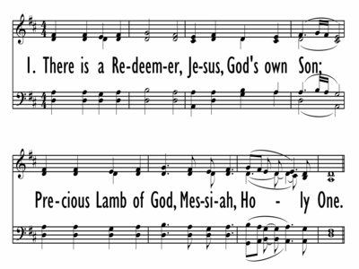

|
|
【有一位救贖主】 |
|
There is a Redeemer: Jesus, my Redeemer,
|
有一位救贖主－耶穌，神愛子；
感謝天父上帝，你賜下獨生子， 又賜下聖靈引領，作工直到主來。 |
|
 |
|
|
|
|

There is A Redeemer - Keith Green w/ Worship Lyrics https://youtu.be/ldRcFz7rK7w - here is A Redeemer
https://youtu.be/MboAvzpvz58 -
世紀頌讚284首(There Is a Redeemer) 有一位救贖主
https://youtu.be/om1CH2rhxSQ
| Text: | There Is a Redeemer |
| Author: | Melody Green |
| Tune: | GREEN |
| Composer: | Melody Green |
| Text Information | |
|---|---|
| First Line: | There is a Redeemer-- Jesus, God's own Son |
| Title: | There Is a Redeemer |
| Author: | Melody Green |
| Refrain First Line: | Thank You, oh, my Father |
| Meter: | Irregular meter |
| Language: | English |
| Publication Date: | 2008 |
| Topic: | Eternal Life, Heaven |
| Copyright: |
© 1982 Birdwing Music (ASCAP)/BMG
Songs (ASCAP)/Ears to Hear Music (ASCAP)(both admin. by EMI CMG
Publishing) All rights reserved. Used by permission. Psalm 19:14; Isaiah 44:6; |
| Tune Information | |
|---|---|
| Name: | GREEN |
| Composer: | Melody Green |
| Meter: | Irregular meter |
| Key: | D Major |
| Copyright: | © 1982 Birdwing Music (ASCAP)/BMG Songs (ASCAP)/Ears to Hear Music (ASCAP)(both admin. by EMI CMG Publishing) All rights reserved. Used by permission. |
| Short Name: |
Melody Green |
| Full Name: | Green, Melody, 1946- |
| Birth Year: | 1946 |
Born: August 25, 1946, Hollywood, California.
Melody Green is probably most loved for the songs she’s written. “There Is A Redeemer” is found in church hymn books around the world, and reports of it being sung in villages in Africa and Asia are plentiful. She has also composed many other standards including, "Make My Life A Prayer To You," “You Are The One,” Rushing Wind,” and "The Lord Is My Shepherd."
Looking back, although Melody was born in Hollywood, she came into this world quietly and without fanfare. She grew up in Venice in a funky little apartment facing an alley, called Speedway. With no safe place to play, and the beach just a few hundred feet away, the sand became her only playground. As a young girl who always watched the shifting tides, the star patterns, and the sunsets, Melody realized there must be a Creator for such perpetual beauty, universal order and symmetry to exist.
Her father was a WWII Navy Seals Veteran, a hunter and fisherman, and a factory worker by trade. Her mom worked at a CPA firm, and was raised in an Orthodox Jewish family, the child of Russian refugees. Melody’s grandfather was a Rabbi, her grandmother, the child of a Grand Rabbi. Escaping Czarist persecution, her grandparents bundled up their five children and took a train to the shipyard in Odessa.
Melody says, “It’s a miracle I’m even alive! My family barely escaped death in Odessa, then on the train ride to the port they were ducking bullets shot at them through the windows. My precious grandparents put the kids on the floor and laid on top of them, covered with pillows for protection. They made it to the port and actually escaped on the every last ship that would allow fleeing refugees on board! My mom was their sixth child, but the very first child to be born in America.”
Today Melody says, "My family history has played a large part in shaping my heart to absolutely disdain all types of persecution, prejudice, and injustice. Some things are just wrong. My spirit told me this long before I even met the Lord.”
After college, Melody designed clothing in the famed Garment District of Los Angeles. Later she took a job at a Production Company. It was there that she met Keith Green, an aspiring musician who was on a very similar spiritual journey. Within a year they were married and continued their spiritual search together. Now Melody designed and made unique clothing for herself and Keith for his nightclub gigs in Hollywood and his record label auditions.
In 1975 they were invited to a small bible study in upscale Bel Air and their lives were forever changed. Melody finally found the truth she’d been looking for, but in an unexpected package. However, both Melody and Keith understood that in Jesus they had found their one and only true Messiah.
Calling herself a Jewish Christian, Melody decided to just do what the bible said. So she and Keith opened the doors of their small home and took in kids with drug problems and surprise pregnancies, usually leading them to the Lord. They also had Pot Luck dinners and bible studies for their whole neighborhood... going door to door to invite people. Before long more space was needed, so they bought or rented a total of six more homes, built triple high bunks, ate donated mystery food (cans without labels) and just kept on growing.
In 1979, feeling a need to leave "the city'" because of the rehab work they were doing, they moved their flourishing ministry to a 120-acre ranch in East Texas. Melody still traveled on Keith's concert tours where she ran the soundboard, sold albums, and as always, she and Keith wrote music wherever they could. Back at the ranch she oversaw the “women’s ministries,” wrote hundreds of counseling letters, and took care of her young and growing family.
By 1982 the ministry had a worldwide impact, with nearly 100 people on staff. Melody was busy editing The Last Days Magazine, as well as writing many of its articles. Keith’s music was at the top of the charts and new facilities were built and more were in the planning stages.
Then one day in July a tragic accident changed Melody’s life forever.
Keith and two of their young children, with some visiting friends, went for a short ride in a small plane. It was the LDM weekly fast day, and the ministry pilot had just returned. Keith met the pilot on the runway and everyone jumped into the plane. But the plane did not get the needed lift, and just 20 seconds later it crashed in a neighboring field and burst into flames. There were no survivors.
When Keith died he was just 28 years old. Melody's first born, Josiah, was almost four and Bethany was two years old. At the time, Melody was at home with their one year old daughter Rebekah Joy and six weeks pregnant with their fourth child. Melody says, “The rug was yanked out from under my whole world that day.
Without the Lord and the support of my friends and the LDM community I never would have made it.” But she did make it, pressing in to lead LDM through the crisis, while caring for her surviving daughter.
In the fall of 1982 Melody traveled across America with the Keith Green Memorial Concert, reaching over 300,000 people face to face. Since the mission field was the last burden she and Keith shared, she was the one left to carry that challenge. Loren Cunningham, the founder of Youth With A Mission said, "This was the largest missions challenge in history that I know of."
In March of 1983 Melody took some time off to give birth to her new daughter, Rachel Hope. Now Melody was a single mom with two little girls... and leading a large international ministry. It was at a time when women leaders were few and not readily accepted, but the Lord gave Melody great favor and continued to use both her and LDM in incredible ways.
In 1985 Melody became a forerunner in the tiny but budding Pro Life Movement. She says. "The Lord told me to move abortion up to the front burner," and of course she took all of LDM with her. She launched Americans Against Abortion at a time when pastors rarely mentioned abortion or felt believers should even address it. But Melody put a fresh face and a non-stoppable energy into being Pro-Life... and she drove the message home, squarely into millions of evangelical hearts.
In this season Melody crossed the nation teaching the biblical perspective on caring for Life, and urging all believers to take a determined stand. Supporting only non-violent means, and wearing a bullet proof vest because of death threats, Melody spoke in churches, held rallies on Capital steps, called secular press conferences, led city wide marches, and picketed abortion clinics. She was even arrested once during a peaceful protest, spending the night in an inner city jail and going home with a head injury.
In the following years God opened many unforeseen doors for Melody. She went to India and met Mother Theresa visiting her “Home For The Destitute and Dying.” She was also invited to the White House to meet with Presidents, Senators, and others in political office. None of it really phased her. She likes to say, "I sat in dirt in India and wore silk to the White House. How weird is that?"
Today Melody still oversees LDM where her voice can be heard on numerous relevant topics from a biblical perspective. Loving to expose people to what she believes is important, she continues to bring LDM readers the teachings of others who she believes have something vital to say.
Believing that caring for others is not an option, Melody established the Good Neighbor Mercy Fund, enabling LDM to raise donations for disaster victims, the sick, and the needy. LDM has already given to victims of the Asian Tsunami and Hurricane Katrina as well as others with pressing needs.
Melody lives in Kansas City, Missouri. Her daughters are happily married and following the Lord with their husbands.
--www.lastdaysministries.org (excerpts)
There Is a Redeemer is a praise and worship song first written by Melody Green in 1977 and popularized by her husband, contemporary Christian musician Keith Green. It was first released on 1982's Songs for the Shepherd, the last album to be released before his death in a plane crash. The final verse was added by Keith.[1]
The song has been covered by various artists such as Robin Mark, David Nevue, Kathryn Sarah Scott, Selah, Kathy Troccoli, Michelle Tumes, Matthew Ward, and Kelly Willard. It appears in twenty hymnals and has been described as a 'classic.'[2]
https://en.wikipedia.org/wiki/There_Is_a_Redeemer